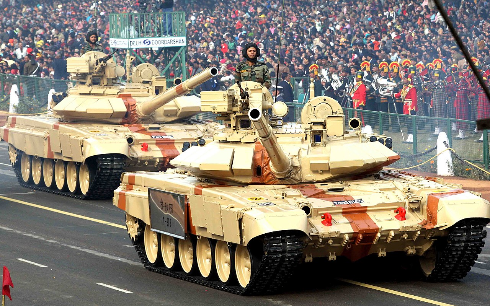

Geopolitics · Diplomacy
India and Russia: The Enduring Strategic Friendship

Few relationships in Indian diplomacy run as deep as the one with Moscow. Forged in the Cold War and sustained ever since, it is a friendship of hardware and habit — and one now navigating a world that has shifted beneath it.
A Cold War inheritance
When Western capitals kept their distance, the Soviet Union armed India, backed it at the UN, and stood with it during the 1971 war. Generations of Indian tanks, jets and submarines were Soviet-built. That trust outlived the USSR itself.[1]
India would not pick a side simply because others demanded it.
The arsenal of friendship

Russia remains a cornerstone of India's military: the S-400 air-defence system, leased submarines, the BrahMos missile co-developed by the two, and licensed production of fighters and tanks. No other partner has shared sensitive technology as freely.
Energy and the balancing act
After 2022, as the West sanctioned Moscow, India sharply increased its purchases of discounted Russian crude — defending the choice as a matter of its own energy security. It was a vivid demonstration of strategic autonomy: India would not pick a side simply because others demanded it.
A friendship under strain
Yet the relationship faces real pressure. Russia's deepening dependence on China unsettles Delhi; war has disrupted arms deliveries; and India's growing closeness to the United States complicates the optics. The bond endures, but it is no longer the unquestioned anchor it once was.
Why it persists
India keeps the friendship alive because it still serves: spare parts for a largely Russian arsenal, a veto-wielding friend at the UN, and a partner in BRICS and the SCO. In a multipolar world, Delhi prizes options — and Moscow remains one of them.
Sources & further reading
- "India–Russia relations," Wikipedia.
All images via Wikimedia Commons, used under the licences shown on each file page.